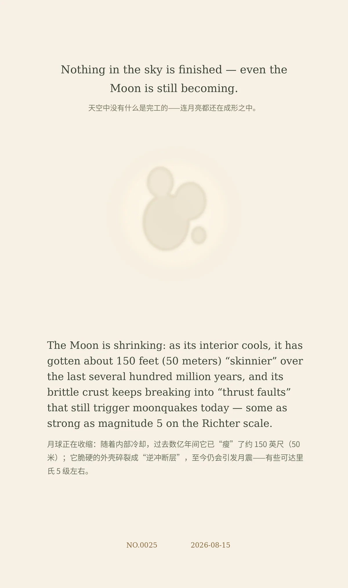

Nothing in the sky is finished — even the Moon is still becoming.（天空中没有什么是完工的——连月亮都还在成形之中。）
The Moon is shrinking: as its interior cools, it has gotten about 150 feet (50 meters) “skinnier” over the last several hundred million years, and its brittle crust keeps breaking into “thrust faults” that still trigger moonquakes today — some as strong as magnitude 5 on the Richter scale.（月球正在收缩：随着内部冷却，过去数亿年间它已“瘦”了约 150 英尺（50 米）；它脆硬的外壳碎裂成“逆冲断层”，至今仍会引发月震——有些可达里氏 5 级左右。）
cd10ea0a60c5d97c冷知识由执笔的模型自行查证。逐条断言、来源与所引原句存档在纯文字副本里，未经程序逐字校验，留作事后核实。